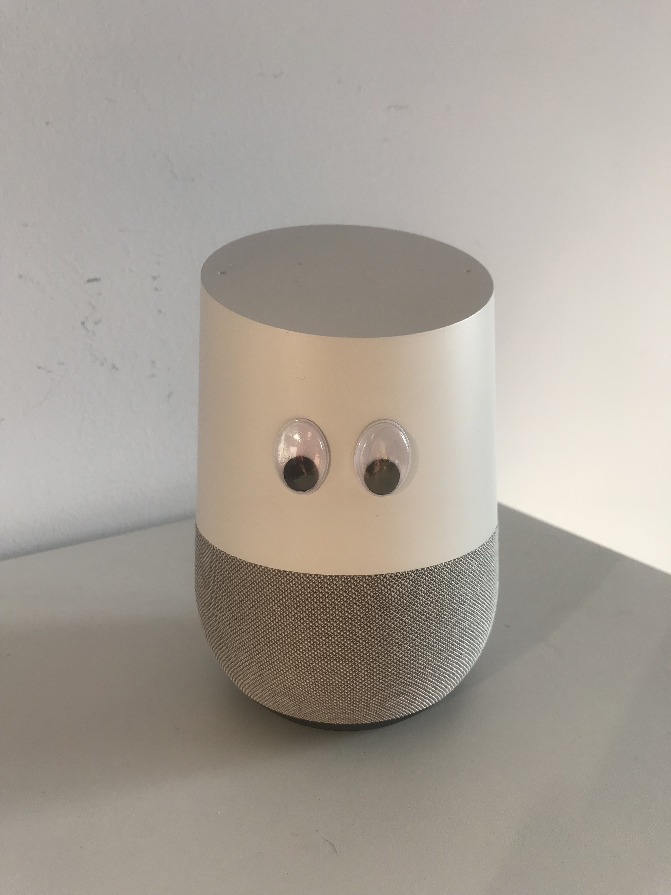

Supplies:
2 craft store Googley Eyes
Hot glue
The first, most low-tech design intervention is to affix eyes from a craft store to the upper area of the speaker now designated as its "face." These eyes will not be interactive, but they will still provide a visual reminder of the speaker's capacity for surveillance through a quick and easy craft project. The result could look something like this.
Critical Design Intervention 1: Googley Eye DIY
